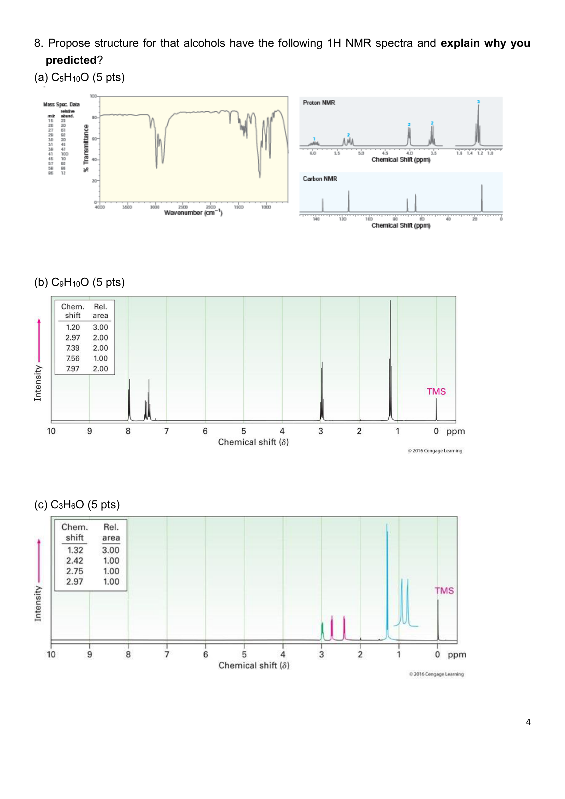
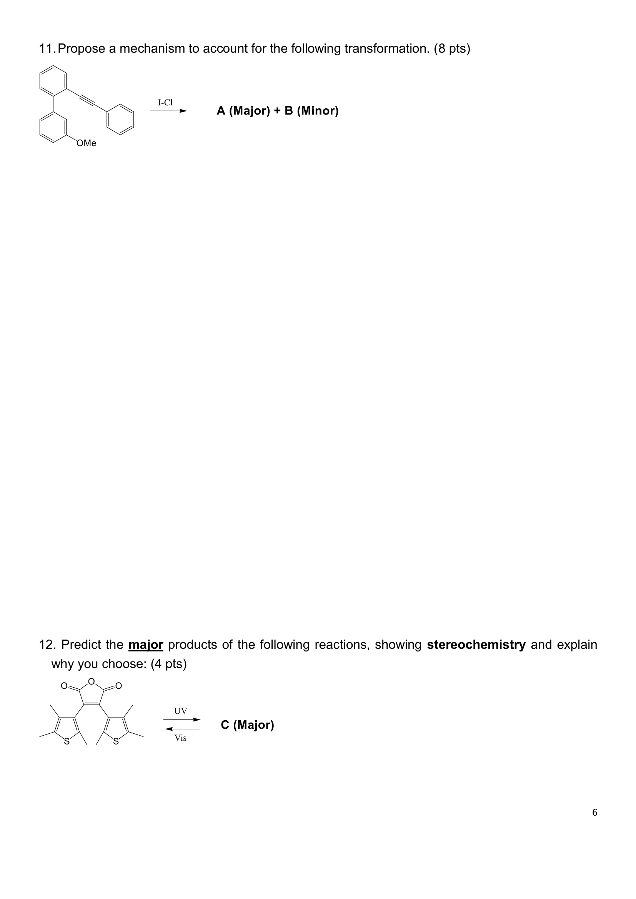
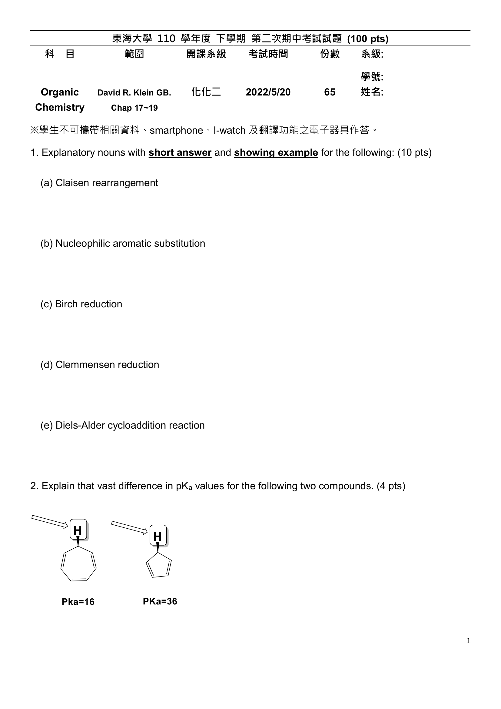
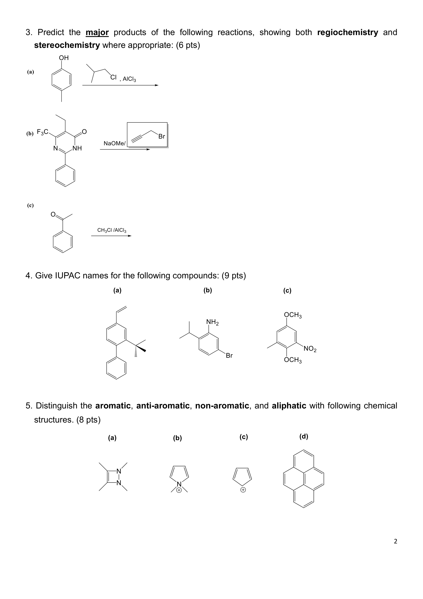
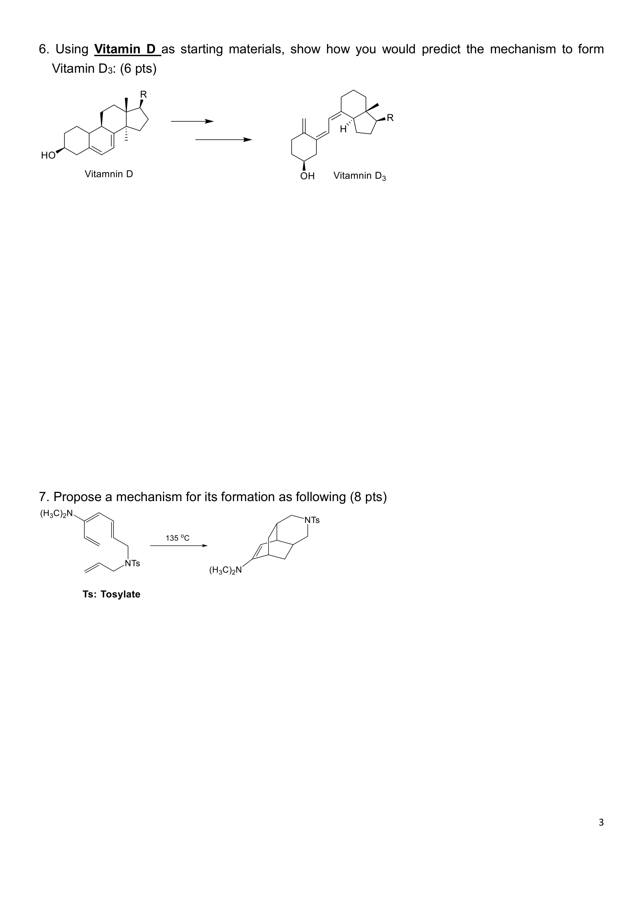
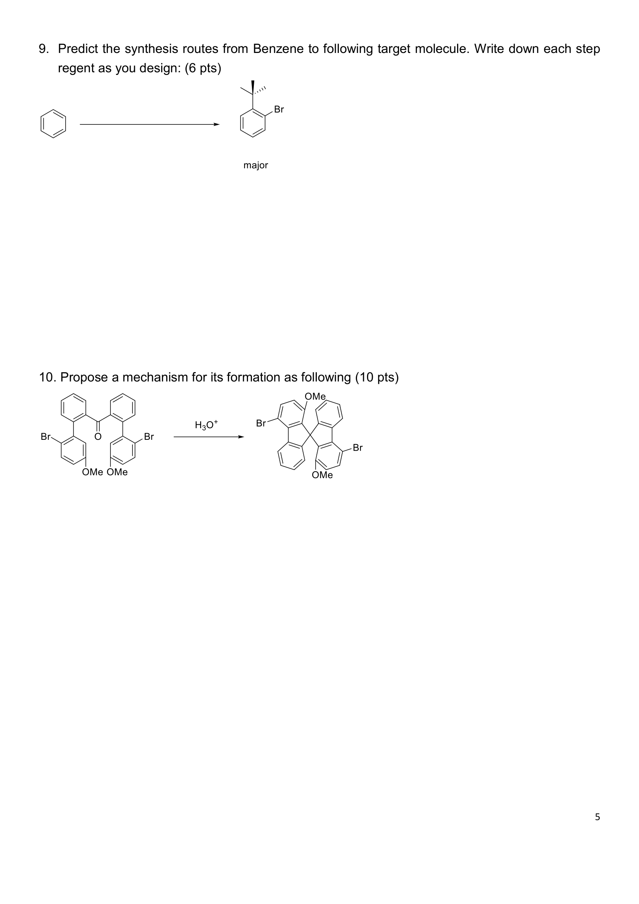
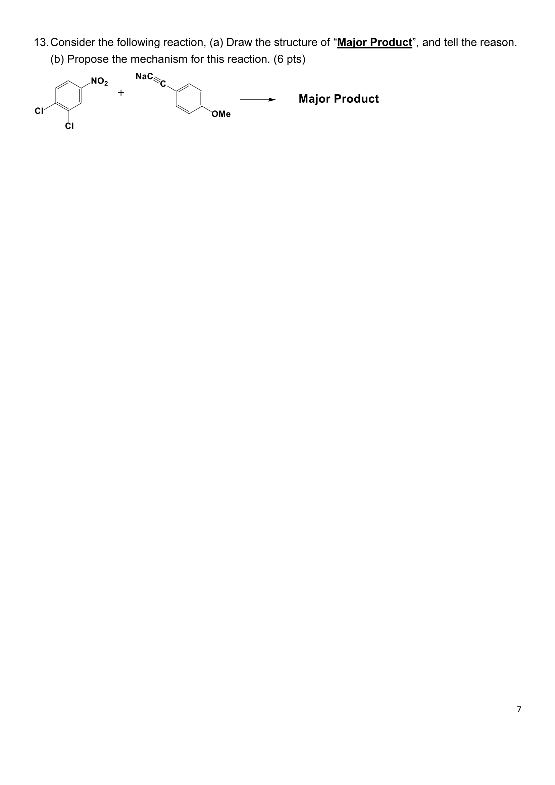

抱佛腳速成
給「明天考試但什麼都還沒讀」的你 ૮ ˶ˆ ﻌ ˆ˶ ა
我把考古題分析過了 — 二段考有固定題型骨架，110 / 111 兩年題目幾乎一樣，背對的題目就能拿不少分。
策略：先學 CP 值最高的（純背就拿分），最後才學要動腦的。
學習路徑與分數預估
★ 再加階段 2 的「芳香性判別」+「pKa」 → 拚 50 分及格邊緣。
★ 全部讀完 → 60-70 分輕鬆。
每個 step 後面標的 「📖 課本：XX.XX」 就是對應的課本題編號。如果還有時間（或考試前一晚才看到這頁），優先做這幾題，命中率超高。
完整課本題詳解 → Ch17 習題 ｜ Ch18 習題 ｜ Ch19 習題
階段 1 ｜ 純背就拿分
答案直接背：2-pentanone · propiophenone · propylene oxide
題目永遠是「Propose structure for that alcohols have the following 1H NMR spectra」+ 給三個分子式。
📷 點我看原題（110 學年度 Q8 完整 IR / MS / NMR 圖譜）

CH₃-CO-CH₂-CH₂-CH₃
| 位置 | δ (ppm) | H 數·裂分 | 對應 |
|---|---|---|---|
| a | 2.1 | 3H, s | CH₃-CO-（α-CH₃） |
| b | 2.4 | 2H, t | -CO-CH₂-（α-CH₂） |
| c | 1.6 | 2H, sextet | 中間 -CH₂- |
| d | — | — | （與 c 同段） |
| e | 0.9 | 3H, t | 末端 -CH₃ |
另外線索：IR 1720 cm⁻¹（C=O 強峰）｜MS 基峰 m/z = 43（CH₃C=O⁺）｜McLafferty m/z = 58 失 28
Ph-CO-CH₂-CH₃
| 位置 | δ (ppm) | H 數·裂分 | 對應 |
|---|---|---|---|
| a | 7.97 | 2H, d | 苯環 ortho H（被 C=O 去屏蔽） |
| b | 7.39 | 2H, t | 苯環 meta H |
| c | 7.56 | 1H, t | 苯環 para H |
| d | 2.97 | 2H, q | -CO-CH₂-（α-CH₂） |
| e | 1.20 | 3H, t | 末端 -CH₃ |
關鍵判斷：三組芳香 H（2:1:2）= monosubstituted phenyl（單取代苯）｜ortho H 在 ~8 ppm 表示苯接的是電子吸引基（C=O）｜q (2H) + t (3H) = -CH₂CH₃ 組合
(2-methyloxirane)
| 位置 | δ (ppm) | H 數·裂分 | 對應 |
|---|---|---|---|
| a | 2.42 | 1H, dd | 環 -CH₂- 之中一 H （與 CH₃ 同側） |
| b | 2.75 | 1H, dd | 環 -CH₂- 另一 H （與 CH₃ 反側，diastereotopic） |
| c | 2.97 | 1H, m | 環 -CH-（接 CH₃ 的那個） |
| d | 1.32 | 3H, d | 側鏈 -CH₃ |
關鍵判斷：三個 H 全部不等價（diastereotopic，因 epoxide C2 是手性中心）｜全部訊號在 1-3 ppm 範圍，沒有 sp² 區域 → 不是烯/苯/醛｜CH₃ 是 doublet（被一個 CH 偶合）→ 接 sp³ CH
HDI=1 → 1 個雙鍵或環；HDI=4 → 苯環；HDI=5 → 苯環 + C=O。
考試畫結構後一定要做：把每個 NMR 訊號用 a/b/c... 標到結構上，對應「每個 peak = 哪個 H」的關係（拿全分關鍵）。
（a）2-pentanone：2.1 (3H, s) 是 CH₃ 接 C=O 的 singlet — 看到這個就是 methyl ketone
（b）propiophenone：7.97 / 7.56 / 7.39（2:1:2） = 單取代苯接 EWG 的標準格式
（c）propylene oxide：三個 H 都在 2-3 ppm（diastereotopic CH₂ + CH）+ 1.32 d (3H) = epoxide 唯一可能
📷 看原題（110 學年度 Q12：thiophene maleic anhydride UV/Vis）

| π 電子數 | Heat（熱） | hν（光，UV） |
|---|---|---|
| 4n（4, 8, 12...） | conrotatory | disrotatory |
| 4n+2（6, 10, 14...） | disrotatory | conrotatory |
conrotatory（同向旋轉）= 兩端取代基反式（trans）
disrotatory（反向旋轉）= 兩端取代基順式（cis）
- 原始結構是 6πe⁻ triene
- UV + 6πe⁻（4n+2） → conrotatory
- 結果取代基朝 trans（反式）
📷 看原題（110 學年度 Q1：5 個名詞）

| 名詞 | 怎麼答（簡答） | 範例反應 |
|---|---|---|
| Claisen rearrangement 克萊森重排 |
Allyl vinyl ether 加熱 → γ,δ-unsaturated carbonyl。[3,3]-sigmatropic，六員環椅式 TS。 | allyl phenyl ether → o-allyl phenol（芳香 Claisen） |
| Diels-Alder cycloaddition 狄爾士-阿德爾 |
[4+2] cycloaddition。Diene（donor）+ dienophile（含 EWG）→ 環己烯。Suprafacial-suprafacial、syn addition。 | 1,3-butadiene + acrylonitrile → 3-cyclohexenyl-CN |
| Nucleophilic Aromatic Substitution (SNAr) 親核芳香取代 |
芳環有 強 EWG（NO₂）+ 好離去基（X）時，親核劑取代。經 Meisenheimer complex。NO₂ 必在 ortho/para 位才共振穩定。 | p-Br-nitrobenzene + NaCN → p-CN-nitrobenzene |
| Clemmensen reduction 克萊門森還原 |
Zn(Hg) / HCl, Δ。把 aryl ketone 的 C=O 還原成 CH₂。常接在 Friedel-Crafts acylation 後（避免烷基化的碳重排）。 | PhCOR → PhCH₂R |
| Birch reduction 伯奇還原 |
Na / NH₃(l) / ROH。把苯環還原成 1,4-cyclohexadiene。EDG（OMe）→ 取代基連 sp³ 碳；EWG（COOH）→ 連 sp² 碳。 | 苯 → 1,4-cyclohexadiene |
(Diels-Alder diene)
(dienophile)
階段 2 ｜ 觀念題（會了就拿）
4 步驟流程：① 是不是環？② 是不是平面？③ 環中所有原子有 p 軌域？④ 數 πe⁻ 套 Hückel。
📷 看原題（110 學年度 Q5：4 個結構判別）

| 類別 | 定義 | 穩定性 | 典型例子 |
|---|---|---|---|
| aromatic 芳香 |
① 環狀 ② 平面 ③ 環中每個原子皆 sp²（含 p 軌域，可形成連續 π 系統） ④ πe⁻ = 4n+2（2, 6, 10, 14…） | 超穩定 （共振能 ~150 kJ/mol） |
苯（6π）、pyridine、pyrrole、cyclopentadienyl anion、tropylium cation、naphthalene、pyrene |
| anti-aromatic 反芳香 |
① 環狀 ② 平面 ③ 環中每個原子皆 sp² ④ πe⁻ = 4n（4, 8, 12…） | 非常不穩定 （比一般共軛二烯還糟，能避就避） |
cyclobutadiene（4π）、cyclopentadienyl cation（4π）、cyclopropenyl anion |
| non-aromatic 非芳香 |
是環，但任一條件不滿足： • 環中有 sp³ 原子（破壞 p 軌域連續性） • 環不平面（如 8 員環 tub-shape） • 雖滿足 aromaticity 條件但結構扭曲變不平面以避免 anti-aromaticity |
跟一般烯類差不多，沒有特別穩或不穩 | cyclohexane（全 sp³）、1,3-cyclohexadiene（有 sp³ C）、cyclooctatetraene（8π 但 tub）、N-methylpyrrolium（環有 sp³ C） |
| aliphatic 脂肪族 |
不是環 | — | 正己烷、1,3-丁二烯、丙酮 |
- 不是環？ → aliphatic
- 是環，但環中有 sp³ C/N？（如 N-methylpyrrolium 的 -CH₂-，cyclohexane 的所有 C）→ non-aromatic
- 是環、平面、全 sp²（或含 p 軌域）？數 πe⁻：
- = 4n+2 → aromatic
- = 4n → anti-aromatic
- 大環（≥8 員）？就算 πe⁻ 對，也要看是否真的能維持平面。8 員 cyclooctatetraene 雖 8π（4n）「應該」 anti-aromatic，但它扭成 tub 形避免了 anti-aromaticity → non-aromatic
- 每個 C=C（或 C=N）在環中 → +2 πe⁻
- Carbocation（C⁺）在環中 → 0 πe⁻（空 p 軌域，提供位置但無電子）
- Carbanion（C⁻）在環中 → +2 πe⁻
- 環上 N 的 lone pair：看 lone pair 在哪個軌域
- 若 N 沒接 H（如 pyridine 的 N）→ lone pair 在 sp² 平面方向，不參與環內 π，貢獻 0
- 若 N 接 H（如 pyrrole 的 N-H）→ lone pair 在 p 軌域，參與環內 π，貢獻 +2
- 環上 O / S 的 lone pair：(furan、thiophene) 一個 lone pair 在 p 軌域貢獻 +2，另一在平面方向不算
- Cyclopentadiene（中性，有 sp³ CH₂）：環有 sp³ C → non-aromatic
- Cyclopentadienyl cation（C⁺，4π）：4π = 4n → anti-aromatic（**非常不穩定**）
- Cyclopentadienyl anion（C⁻，6π）：6π = 4n+2 → aromatic（**超穩定**，這就是 cyclopentadiene pKa~16 的原因）
同一個 5 環，cation/中性/anion 三種狀態三種類別都不一樣！考試愛考。
- 每個 C=C → 2 πe⁻
- Carbocation（C⁺）在環中 → 0 πe⁻（空 p 軌域）
- Carbanion（C⁻）/ N、O lone pair 在 p 軌域 → 2 πe⁻
- 例如 pyrrole（NH）：2 個 C=C + N 的 lone pair = 4 + 2 = 6 πe⁻ → aromatic
| 結構 | πe⁻ 數 | 答案 |
|---|---|---|
| pyrazole 衍生物（5 環 2 N 相鄰） | 6 | aromatic |
| N-methylpyrrolium（5 環，N 接 CH₃，環有 sp³ C） | — | non-aromatic |
| cyclopentadienyl cation | 4 | anti-aromatic |
| cyclooctatetraene（8 環） | 8 但 tub 不平面 | non-aromatic |
| pyrene（4 環稠合） | 14 | aromatic |
| benzimidazole（6+5 環稠合） | 10 | aromatic |
答題公式：失質子（或加質子）後 → 數 πe⁻ → 套 4n+2 規則 → aromatic 比較穩 → 偏向那邊。
📷 看原題（110 學年度 Q2：cycloheptatriene vs cyclopentadiene）
- 失質子後若得到 aromatic 物種 → 此酸 強（低 pKa）
- 失質子後若得到 anti-aromatic → 此酸 弱（高 pKa）
哪個比較酸？A（pyrrolium）較酸
- A（pyrrolium NH⁺）：N 的 lone pair 原本參與芳香性。質子化後 lone pair 拿去和 H 結合 → 環只剩 4 πe⁻ → anti-aromatic → 不穩定 → 容易失質子 → 較酸
- B（pyridinium NH⁺）：N 的 lone pair 在 sp² 軌域（不參與環內 π）。質子化不影響芳香性 → 6 πe⁻ aromatic 保留 → 穩定 → 較不酸
背：6π + UV = conrotatory。
📷 看原題（110 學年度 Q6：Vitamin D → D₃ 機制）

- 畫原始 cyclohexadiene 結構（B 環 6πe⁻）
- 標明 3 個雙鍵電子對同向旋轉（conrotatory，因為光化）
- 畫成最終的 triene（secosteroid，B 環打開）
- 標明立體：兩端 H 朝反式（trans，因為 conrotatory）
- 反應：6π electrocyclic ring opening
- 條件：hν（UV）
- 立體：conrotatory → 兩 H 反式
階段 3 ｜ 衝刺題（時間夠就讀）
必背：① alkyl 會碳陽離子重排（1°→3°）② OH/NH₂ 是 ortho/para director ③ NO₂/COR 是 meta director。
📷 看原題（110 學年度 Q3：3 個 EAS 預測產物）
| 取代基類別 | 例 | 導向 |
|---|---|---|
| 強活化 EDG | -OH, -NH₂, -NHR, -NR₂, -OR | ortho / para |
| 弱活化 EDG | -CH₃, -R（烷基） | ortho / para |
| 弱去活化（halogen 例外） | -F, -Cl, -Br, -I | ortho / para（但反應慢） |
| 強去活化 EWG | -NO₂, -CN, -COR, -COOH, -SO₃H | meta |
- OH 是強活化 + ortho/para director（para 已被 CH₃ 占）→ 走 ortho
- Isobutyl⁺（1° cation）不穩定 → 1,2-hydride shift → tert-butyl⁺（3° cation）
- 主產物：2-tert-butyl-4-methylphenol（不是 isobutyl！）
Ambident anion（如去質子化的 NH-pyrimidone）+ 軟親電劑（如 propargyl Br，sp 碳）→ 軟對軟 → O-alkylation 為主（保有 pyrimidine 芳香性更穩定）。
📷 看原題（110 學年度 Q4：3 個 IUPAC 命名）
- 找最高優先官能基當主鏈/後綴（COOH > C=O > OH > NH₂ > OR > X > R）
- 編號讓取代基 locant 總和最小
- 取代基字母順序排（不算 di/tri/tert 字首）
- 立體 (R)/(S)、(E)/(Z) 必寫
- 全部小寫（除非句首），數字跟字母用「-」連接，連續取代基用「,」分隔
IUPAC 命名標準是全小寫（Klein 課本 / 多數大學考試也是這樣）。
✅ 對：
5-bromo-2-isopropylaniline、4-tert-butylpyridine❌ 錯：
5-Bromo-2-Isopropylaniline、4-Tert-Butylpyridine（除非寫在句首）取代基字母前綴的「tert-」、「sec-」、「n-」永遠小寫且不算字母排序（依「butyl」的 b 排）。
| 結構描述 | 正解 |
|---|---|
| 苯環 + vinyl + tBu + Ph 三取代 | 3-tert-butyl-4-phenylstyrene |
| 苯環 + NH₂ + iPr + Br 三取代 | 5-bromo-2-isopropylaniline |
| Pyridine + tBu 在 4 位 | 4-tert-butylpyridine |
| 苯環 + 2 OMe + NO₂ + CH₃ | 2,5-dimethoxy-3-nitrotoluene |
📷 看原題（110 學年度 Q9：苯 → o-tert-butylbromobenzene）

- 苯 + tBuCl / AlCl₃ → tert-butylbenzene（Friedel-Crafts，3° 不重排）
- + fuming H₂SO₄ / ice bath → 4-tBu-benzenesulfonic acid（SO₃H 進 para 阻擋）
- + Br₂ / FeBr₃ → 2-Br-4-tBu-benzenesulfonic acid（Br 被擠到 ortho）
- + dilute H₂SO₄, Δ → 移除 SO₃H → o-tBu-bromobenzene
Alkylation 容易碳重排（1°→3°）。Acylation（acyl chloride）的 acylium ion 是 sp² 共振穩定，不會重排。先 acylation 接 ketone，再 Clemmensen 還原成 CH₂R 即得相同 alkyl 基但無重排問題。
NO₂ 必須在離去基的 ortho 或 para，才能共振穩定中間體。
📷 看原題（110 學年度 Q13：SNAr 主產物 + 機制）

- Addition：親核劑攻擊 ipso C（Cl 接的那個 C）→ sp³ 中間體（Meisenheimer complex），負電荷在環上
- 共振穩定：負電荷透過共振分散到 ortho/para 的 NO₂ 上
- Elimination：Cl⁻ 離開 → 重建芳香性 → 主產物
- 有兩個 Cl：一個在 NO₂ 的 ortho（位置 2 或 4）、一個在 NO₂ 的 meta
- 取代發生在 ortho 那個 Cl（共振可達 NO₂）
- 主產物：alkyne 取代 NO₂ ortho 的 Cl
課本習題 = 考古題源頭
| 命中率 | 課本題 | 考古題對應 | 什麼類型 |
|---|---|---|---|
| ★★★ | 18.62 | 111 Q11 | Toluene + acetylene 合成 trans-stilbene oxide（題目幾乎一字不差） |
| ★★★ | 18.55 | 110/111 Q8 | 譜學辨識 C₁₀H₁₂O / C₉H₁₀O 類型（NMR 推結構） |
| ★★★ | 18.34 | 110/111 Q5 | Aromatic / Antiaromatic / Nonaromatic 判定 |
| ★★★ | 18.39 | 110 Q2（cyclopentadiene 超酸題） | 用芳香性解釋 pKa |
| ★★★ | 19.51 | 110/111 Q13 | SNAr：Ar-Cl + 親核劑 → Ar-Nu 機制 |
| ★★★ | 19.91 | 110 Q11 | I-Cl 親電碘化區位選擇性 |
| ★★ | 17.52、17.75、17.80 | 110/111 Q12 + Q6 Vitamin D | 電環化立體（con/disrotatory） |
| ★★ | 17.72、17.73、17.79 | 110/111 Q7 | 串聯周環反應機制（Cope/Claisen → Diels-Alder） |
| ★★ | 17.43、17.44、17.57 | Q1 名詞（Diels-Alder 範例） | Diels-Alder 逆推合成 |
| ★★ | 19.36、19.67 | 110 Q9 / 多步合成 | 從 benzene 多步合成多取代苯 |
| ★★ | 19.47、19.52、19.58 | 110/111 Q3 | EAS 預測產物 / 二硝化 / 雙重 F-C |
| ★★ | 18.48 | Q2 變體（Cycloheptatrienone vs Cyclopentadienone） | 芳香離子穩定性比較 |
| ★ | 18.24、18.25 | 110/111 Q4 | IUPAC 命名與反向 |
| ★ | 18.49 | Q9（dipole moment 變體） | Azulene 偶極矩 |
| ★ | 18.65 | 結構穩定性題 | Naphthalene / Phenanthrene 鍵長分析 |
這 6 題涵蓋了考古題 ~50 分的內容，做完幾乎等於有看過考古題。
每題詳解都在章節筆記的
#exercises 區，例如 ch18 18.55、ch19 19.91。
課本 18.62：由 toluene 與 acetylene 為唯一碳源合成下列化合物（給結構：(E)-stilbene oxide 或類似）。
111 Q11：「Using Toluene and Acetylene as your only source of carbon atoms, show how you would prepare the following compound.」（給的是 stilbene 環氧化物）
→ 幾乎一字不差！做過 18.62 = 111 Q11 直接送 8 分。
★ 進考場前 5 分鐘 cheat sheet ★
1. NMR 三題（直接背）
- C₅H₁₀O = 2-pentanone（CH₃COCH₂CH₂CH₃）
- C₉H₁₀O = propiophenone（PhCOCH₂CH₃）
- C₃H₆O = propylene oxide（methyloxirane）
2. UV vs Heat 表（背口訣）
- 「熱大光小」：heat con/dis 與 πe⁻ 同奇偶
- 4n + heat = con；4n + UV = dis
- 4n+2 + heat = dis；4n+2 + UV = con（Vitamin D 答案）
3. 名詞解釋必背 5 個
- Claisen / Diels-Alder / SNAr / Clemmensen / Birch
4. 芳香性 4 步驟
- ① 環？② 平面？③ 全 sp²？④ 4n+2 (aromatic) / 4n (anti)
- 失質子後 aromatic 那個 → 較酸（pKa 低）
5. EAS 重排陷阱
- Isobutyl-Cl + AlCl₃ → 主產物是 tert-butyl 不是 isobutyl（1°→3° 重排）
- OH/NH₂ → ortho/para；NO₂/COR/COOH → meta
6. 苯合成 SO₃H 套路
- tBu → 加 fuming H₂SO₄（para 鎖定）→ Br₂（強迫 ortho）→ dilute H₂SO₄ Δ（去保護）
7. SNAr 必背
- NO₂ 必須在離去基 ortho/para 才會走 SNAr
- 機制：addition → Meisenheimer → elimination
8. Vitamin D = 6π conrotatory（hν）
- 機制畫 6 個 π 電子箭頭，標 conrotatory，最終 trans triene
讀完速成版還有時間，看完整章節筆記補強：
→ Ch 17 共軛二烯/周環反應 ｜ → Ch 18 芳香化合物 ｜ → Ch 19 EAS 親電取代
→ 完整考古題整理（含所有題型）
讀完這頁基本上就有保底了。考前深呼吸，相信自己。